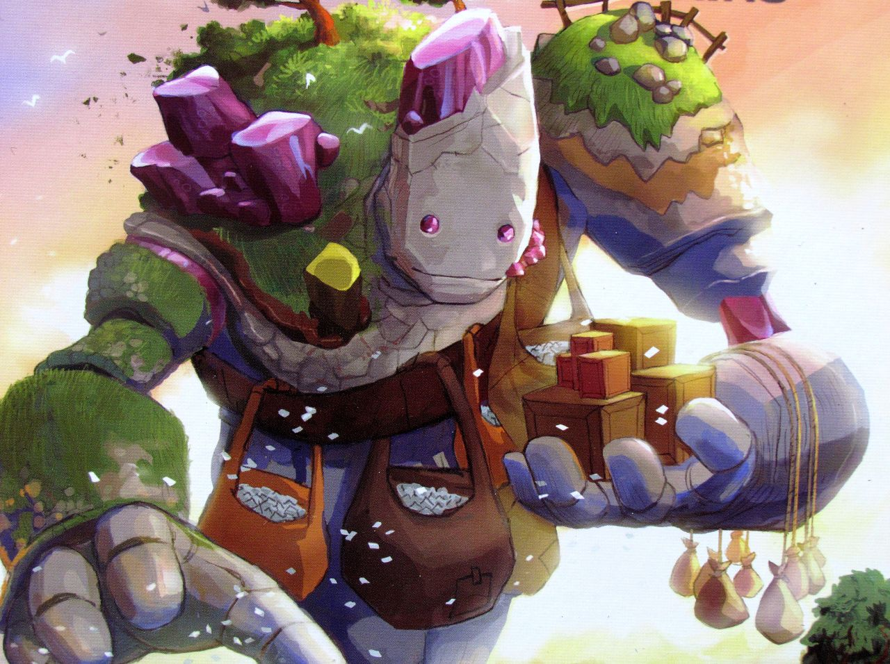

Bílý Král opustil svou jeskyni a vydal se do pustiny. Slunce zapadalo, barvilo oblohu odstíny oranžové a fialové, ale pro Bílého Krále to nebyla krása, ale varování. Temnota se blížila. Jeho první kroky vedly k Zpívajícím Skalám. Tyto obrovské kamenné monolity, kdysi svědky prastaré slávy Ztracených Zemí, nyní jen tiše stály, pokryté prachem a lišejníky. Bílý Král zastavil a zařval. Nebyl to obyčejný řev. Byl to řev plný prastaré magie, řev, který rezonoval s samotnou podstatou Ztracených Zemí. Řev se nesl pustinou, probouzel spící ozvěny dávných dob. A pak se to stalo. Skály začaly zpívat. Hluboké, rezonující tóny se šířily krajinou a nesly v sobě varování. Bílý Král věděl, že jeho řev dosáhl k těm, kteří mu kdysi přísahali věrnost. Ke Skalním Golemům, obrovským kamenným strážcům, jejichž těla byla tvořena samotnými horami. Ke Světelným Elfům, tajemným bytostem, jejichž krása byla stejně zrádná jako jejich luky. A k Vířivým Drakům, tvorům z čisté energie, kteří vládli nebesům. Ale i s jejich pomocí si Bílý Král nebyl jistý, zda dokáže Necromanta porazit. Temnota zesílila a Necromant se naučil novým, ještě zvrácenějším trikům.
